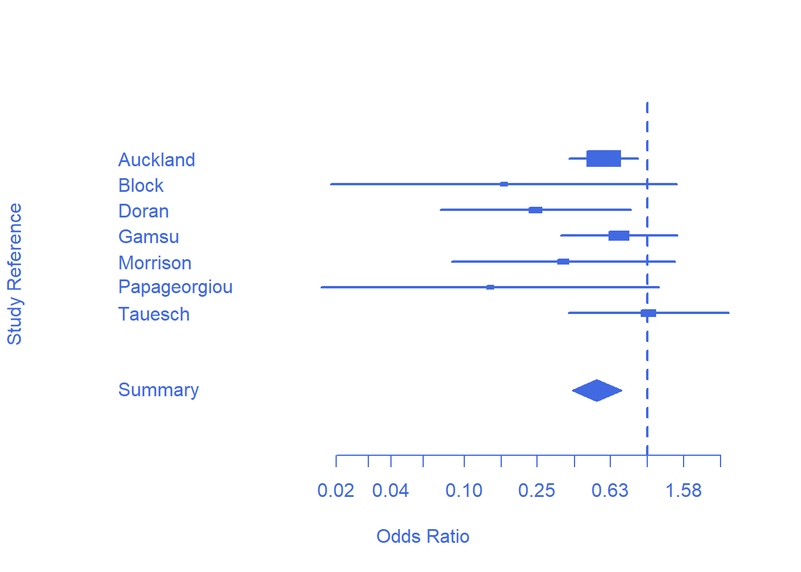
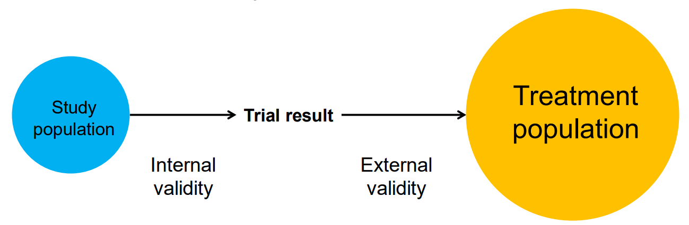
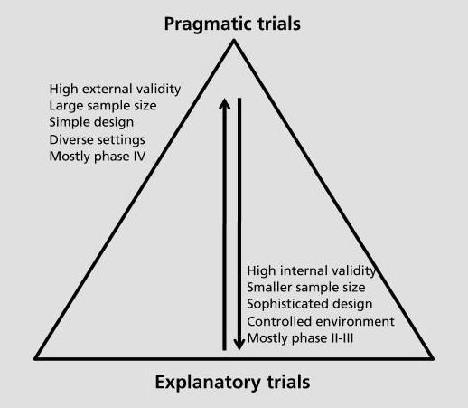

An introduction to EBM (session 5)
skills
beginner
evidence-based medicine
critical appraisal
clinical trials
Session outline
- this session is all about what happens beyond the RCT?
- we’ll recap some of the issues we discussed last time as motivation
- then we’ll introduce and discuss a pair of ways of summarising multiple RCTs
- we’ll relate these two methods back to our earlier discussions about bias
- and we’ll look at a totally different way of solving some of the problems of RCTs
Recap
- detecting treatment effects is hard
- effects are subtle
- trials have practical problems (like recruitment)
- studies are often underpowered
- so they fail to find a real treatment effect
- that causes harm
- some valuable treatments get ignored
- some harmful treatments remain in use
systematic review
E1: the logo
Task
- Please visit https://www.cochrane.org/
- Two questions for the chat:
- What does Cochrane do?
- What does their logo show?
Cochrane story
| Identifier | Deaths (Treatment) | n (Treatment) | Deaths (Control) | n (Control) |
|---|---|---|---|---|
| Auckland | 36 | 532 | 60 | 538 |
| Block | 1 | 69 | 5 | 61 |
| Doran | 4 | 81 | 11 | 63 |
| Gamsu | 14 | 131 | 20 | 137 |
| Morrison | 3 | 67 | 7 | 59 |
| Papageorgiou | 1 | 71 | 7 | 75 |
| Tauesch | 8 | 56 | 10 | 71 |
Forest plots

- useful intro
- one row per study
- box size corresponds with study size (weight)
- box location corresponds with odds ratio (OR)
- whiskers (horizonal lines) showing the confidence interval of that OR
- pooled effect show by the diamond
- size = total weight
- horizontal limits = confidence interval
- how would you interpret the line representing a study crossing 1?
- how can individual lines cross 1, but the pooled diamond not cross 1?
E2: from 1982 to 2020
Task
- Find the current version of this Cochrane review
- What are the main current recommendations?
Current recommendations
 ## Cochrane reviews are systematic reviews
## Cochrane reviews are systematic reviews
A systematic review attempts to identify, appraise and synthesize all the empirical evidence that meets pre-specified eligibility criteria to answer a specific research question (Cochrane library)
Explicit strategies
- like EBM itself
- e.g. Preferred Reporting Items for Systematic Reviews and Meta-Analyses (PRISMA)

Meta-analysis
What’s the difference?
- systematic reviews attempt to include all the relevant studies
- meta-analyses include some relevant studies
- that might give rise to biases…
E3: bias and MA/SR
Task
- Some authors argue that systematic reviews should generally be preferred to meta-analyses on the ground of bias. Can you think of biases that might affect MA, but not SR?
- Can you think of different reasons why you might prefer a MA, rather than a SR?
Bad pharma

- undue influence of industry on drug research
- plus
- excessive emphasis on the methods of trials, rather than their conduct
- plus
- pressure to perform larger, cleaner, RCTs
- produces
- a “murderous disaster” (Goldacre 2012)
Two kinds of validity
Internal and external validity
- MA/SR can improve internal validity
- e.g. aggregating improves power, so more likely to detect true effects
- but they might do this at the expense of reducing external validity
- e.g. our trial population might be more and more unlike our treatment population
- and reducing external validity might mean that an intervention might fail in ways that are hard to understand (Cartwright 2012)

Trial and treatment populations
- wildly dis-similar (Fortin 2006)
- co-morbidity example
- a database of 980 general-practice patients were assessed against inclusion critera from 5 blood pressure RCTs
- of eligible patients “89% to 100% had multiple chronic conditions”
- mean numbers ranged from 5.5 ± 3.3 to 11.7 ± 5.3
Pragmatic trials

Final thought
- so there isn’t going to be a simple answer about where on the precise / pragmatic spectrum we should end up
- it’s an optimisation problem
- as EBM started by stressing the importance of explicit/judicious/conscientious use of evidence, we should probably adopt similar standards for our decision making in general
- explicit about the kind of q we’re answering
- judicious about the way we use evidence to answer it
- conscientious in updating, revising, and checking our answers, and our methods
References
Cartwright, Nancy. 2012. “Presidential Address: Will This Policy Work for You? Predicting Effectiveness Better: How Philosophy Helps.” Philosophy of Science 79 (5): 973–89. https://doi.org/10.1086/668041.
Fortin, M. 2006. “Randomized Controlled Trials: Do They Have External Validity for Patients With Multiple Comorbidities?” The Annals of Family Medicine 4 (2): 104–8. https://doi.org/10.1370/afm.516.
Goldacre, B. 2012. Bad Pharma: How Drug Companies Mislead Doctors and Harm Patients. Fourth Estate. https://books.google.co.uk/books?id=JnwXTwEACAAJ.
Patsopoulos, Nikolaos A. 2011. “A Pragmatic View on Pragmatic Trials.” Dialogues in Clinical Neuroscience 13 (2): 217–24. https://doi.org/10.31887/dcns.2011.13.2/npatsopoulos.